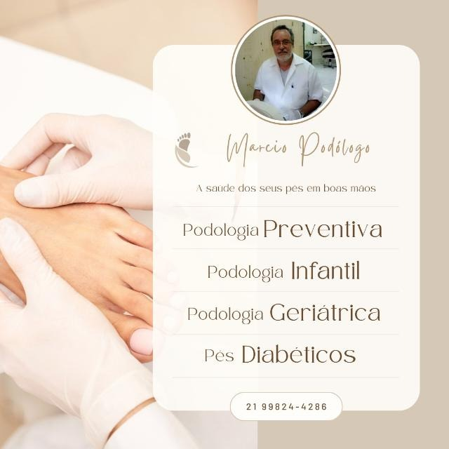

Cuidado com os pés para todas as idades: da prevenção ao acompanhamento de pés diabéticos, com o podólogo Marcio Lemos.
Atendimento podológico para crianças, adultos e idosos, com atenção especial a quem precisa de mais cuidado com os pés.
Cuidados regulares com unhas e pele dos pés, para evitar problemas antes que eles apareçam.
Atendimento cuidadoso e delicado para os pés das crianças.
Atenção às necessidades dos pés da pessoa idosa, com conforto e segurança.
Acompanhamento cuidadoso para quem tem diabetes e precisa de atenção redobrada com os pés.

No consultório na Rua Dr. Borman, no Centro de Niterói, o Marcio atende com hora marcada, cuidando da saúde dos pés de toda a família.
Mande uma mensagem para (21) 99824-4286.
Escolha o melhor dia, de segunda a sábado.
Rua Dr. Borman, 13, loja 109, no Centro de Niterói.